V
E
L
U
T
I
L
E
Grand
prix
intergalactique
de
vélo
porteur
inventé
Grand prix intergalactique de vélo porteur inventé
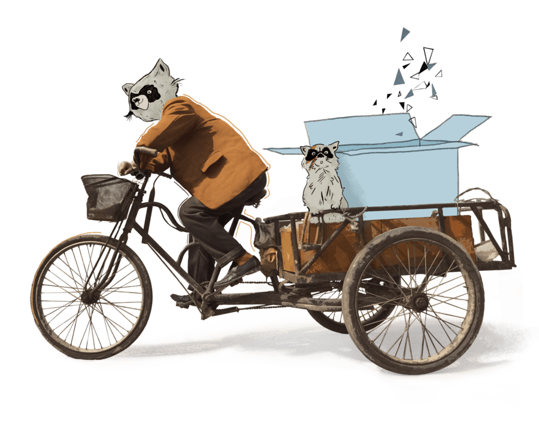
Le Grand Prix Intergalactique du Vélo
Porteur Inventé est un concours de machins★ organisé le temps d’un week-end festif. D'ailleurs, on va plutôt appeler ça un Concours de Machins.
machin★, vélutile★ : engin à
propulsion humaine, dérivé de la bicyclette et destiné à transporter
des charges, des personnes, ou les deux à la fois.
L'EDITION 2023
Le premier Concours de Machins s'est déroulé les 23 et 24 septembre à Redon, au Terrain Vague.
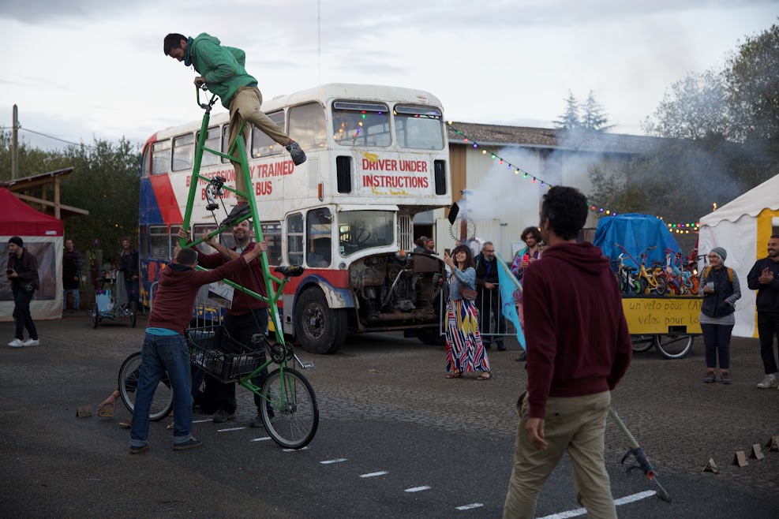
Cette première édition a rassemblé 12 participants, venus de toute la France présenter leur machin, construit en suivant (ou non !) le cahier des charges.
Jury technique, épreuves de maniabilité, concours de freinage lesté de parpaings, interrogatoires musclés sur les motivations, transports d'objets incongrus sur circuit fermé et piégé, rien n'aura été épargné aux valeureux participants. Le stress, la fatigue, la peur, inéluctables sentiments liés à la rude compétition, se lisaient sur les visages.
Sur le terrain, les photographes officiels ont pu documenter cet événement intergalactique, parfois au péril de leur dentition.

Toutes les images de l'édition sont à retrouver ici et là.
PORTRAITS DES PARTICIPANTS
Une belle diversité de machins et autant de personnalités ont pris part à l'aventure : Anatole s'est pointé nonchalamment après 400 km sur son TallBike, perché à 3 m de haut ; alors qu'il n'était même pas inscrit, Antoine a débarqué et transformé son vélo sur place, en moins d'une heure ; Germain a conçu un mini-porteur chic qui se gare à la verticale ; Hugo a transformé un VTT en cargo supersonique ; Léo et son vélo de boucher nouvelle génération aux finitions soignées (oui, il n'y a plus de verbe) ; Mathieu et son tandem à plusieurs étages ; Pascalin avec un vélo recomposé façon Frankenstein ; Pierre et son baleineau inclinable ; Ronan et sa girafe mangeuse de genou ; Sacha et son cargo sorti du sac à dos ; Thomas sur son bambou magique qui a débarqué après avoir traversé la Bretagne et enfin Tifen et son cargo multi-fonction, aussi à l'aise pour transporter des enfants que des packs de bière (dont le carton, hélas, ne résiste hélas pas à la bruine locale, a-t-on pu observer).
Anatole & Marion

Anatole est arrivé tranquillement un matin sur son grand vélo après avoir roulé sa dernière étape en grande partie de nuit, sous la pluie, avec pour éclairage son téléphone. Et tout aussi tranquillement, il nous a annoncé avoir roulé 400 km pour venir au concours avec son vélo.
Pour le concours il a sorti du garage ce vélo construit en 2014, en deux weekends, sans gabarit et en empruntant un MiG (appareil dont il ne s’était jamais servi auparavant). Pour que ça colle au cahier des charges, il y a ajouté les deux barres en bas qui permettent d’avoir une plateforme pour le transport.
Marion, elle, l’appelle le « générateur de sourire » car ils l’ont beaucoup utilisé tous les deux pour se promener dans Paris et ça faisait du bien de voir des parisiens sourire sur leur passage. Ce pouvoir là semble n’avoir pas perdu en force.
Anatole est tombé dans le vélo en achetant un simple cadre de vélo. Cadre qu’il a fallu monter sans connaître la mécanique vélo. Entre temps, il a beaucoup pratiqué le dirt et suivi une formation d’ingénieur mécanique.
Un volontariat en Ouganda chez CoopAfrica inspire ses projets à venir : fabriquer des vélos cargos à partir de matériaux de récup’. Il cherche à être efficace dans la construction même si le résultat n’est pas « esthétique ». « Partir des matériaux existants et disponibles enlève une partie de travail de conception et peut apporter des solutions auxquelles tu n’aurais pas pensé. »
Antoine


Antoine a toujours utilisé le vélo pour se déplacer. Etonnament, sa rébellion, ado, s‘exprimait par le refus d’un porte-bagage. Mais il aime les vélo utiles : « Les vélos de tous les jours sont sous-utilisés dans leur côté utilitaire. »
C’est une construction spontanée qu’il nous présente ici, fabriquée en arrivant à Redon, grâce à des compétences de bricolage –acquises entre autres dans les ateliers vélo associatifs– et un vieux cadre qui trainait là.
Dans ces ateliers, il y a aussi fabriqué des remorques pour des musicien.nes, et notamment La Véloscène. Il est actif à La Poursuite, un collectif qui porte une réflexion sur la décarbonation du monde du spectacle. Ils y travaillent le mode de venue des festivaliers plus que celui des artistes. (Pour en savoir plus : Non, les ecocup ne sont pas la solution)
Avec cette bicyclette, il souhaite nous faire passer le message que ton vélo du quotidien est peut-être déjà sans que tu le saches, un vélo utile. Même si parfois, il le reconnaît, c’est quand même galère. Manier ce vélo encombré suppose aussi des compétences de pilote (l’habitude de manier son vélo, aisance dans la circulation), voire même des talents d’acrobate comme il nous l’a montré avec une réception parfaite lors d’un soleil pour le test de freinage. Son frein avant est très efficace : +1 point !
Germain
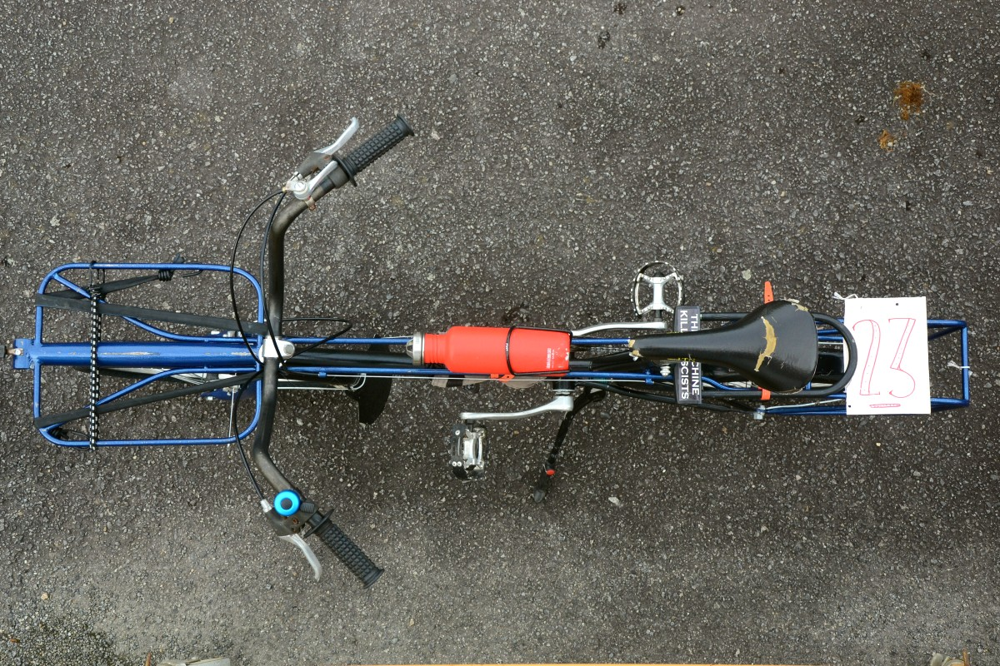
Germain avait peu de temps pour construire un petit vélo qu’il avait en tête : tant pis si ça ne correspondait pas au cahier des charges, sa coloc avait besoin « d’un petit vélo pratique à laisser sans crainte en bas de l’immeuble et que tout le monde peut utiliser pour aller chercher un.e pote à la gare ou trimballer des trucs ».
Mécanicien cycle formé, entre autre, à l'atelier Metz à vélo, il avait fait des incursions à Pont à Mousson pour fabriquer avec François de Cycle itinérance, une fourche cargo. Modèle réussi, puisque répété plusieurs fois ensuite dans le garage.
Le festival A La Dérive aura été l'occasion de fabriquer d'autres modèles de cargo : longtail, longjohn, et remorques de tout format.
Le challenge pour cette construction : peu de temps, un local sans électricité, et l'envie de mieux maitriser le cintrage.
Hugo
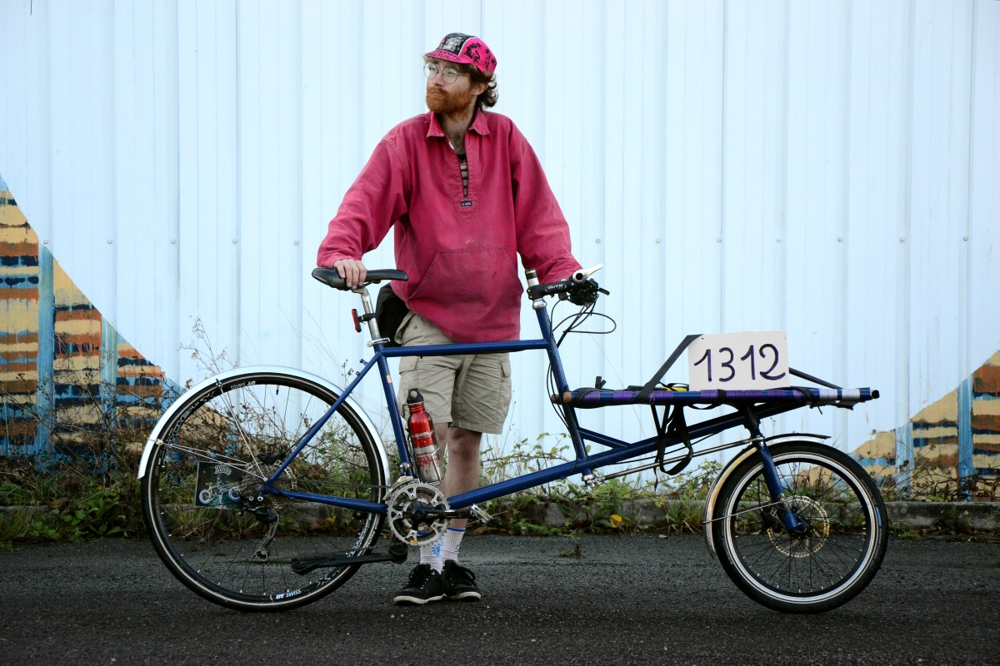
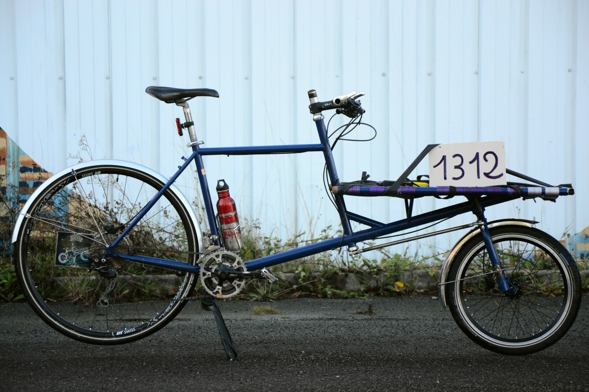
Après quelques péripéties ferroviaires, il est arrivé à Redon pour nous présenter le premier vélo de Cosmo Cargo.
Son envie de vélo a surgi d’un vélodrome : y courir 80 km lui a fait réaliser qu’il était a priori capable de pédaler ces distances dehors ! Cycliste du quotidien dès l’adolescence, il passe par les ateliers d’autoréparation où il est encore très investi, et est régulièrement coursier à vélo : il lui plait de trouver des solutions techniques pour le transport d’objets non motorisé parce que « c’est rigolo, créatif et va dans le sens de la diminution de la consommation d'énergie. »
Sa première "formation" de mécanique, c’est dans le garage des parents : suite à un vol de vélo, il faut en monter un nouveau à partir d’un autre, les deux n’ayant évidemment aucun standard compatible. L’amour des mécanismes le mène à des études d’ingéniérie. Après un stage "presque par hasard" chez MILC, il passe de la curiosité à l’envie de construire des vélos.
Il résume : « Les études d’ingénieurs donnent une grosse culture mécanique et scientifique : c’est riche pour s’inspirer, et on y fait beaucoup de conception. Mais c’est peu adapté hors industrie. La philosophie des ateliers vélos pousse à essayer, même si c’est moche et raté. Pour la fabrication de cadres j’ai beaucoup appris en discutant avec d’autres. »
Cosmo Cargo est un projet à deux. Seb a un autre profil et un cursus moins formalisant. La construction de cadres n’est pas leur activité principale, mais ils font en sorte que ça le devienne. C’est un projet qui prend son temps et qui essaye d’inventer ses manières de faire qui soient moins coûteuses, entre le tout à la main et l’industrie. (exemple → rationaliser en ayant un outil pour tout : un tour)
Si se lancer à deux est plus dur économiquement, c’est plus motivant pour échanger des idées et la force de travail est multiplié par 3 plutôt que par deux.
https://cosmocargo.fr/
Léo
Léo est un constructeur avec de nombreuses cordes à son arc : menuisier après l’école, un passage par des études de psychanalyse, un CQP de mécanicien cycle dans la poche, … voilà pour ce qu’on en sait en quelques minutes (surement trop court!)
Il s’est investit dans un atelier (Label vert à Carpentras) et a eu envie de fabriquer un cargo. Fabriqué (à l’électrode enrobée), testé et cassé. Il est parti à la recherche des anciens cadreurs de vélos sur son territoire, ces rencontres ont été décevantes. Il continue alors, beaucoup en autodidacte, avec la furieuse envie de rencontrer et de se former avec d’autres. D’où sa présence ici malgré les kilomètres pour arriver à Redon. Et ça se sent !
Il a un atelier où il réalise différents projets en métal mais pas que. Lié au vélo mais pas que. En lien aussi avec le monde agricole. Il a des projets de ciné-cyclo, ciné-concert, et café-vélo.
À suivre !
Mathieu
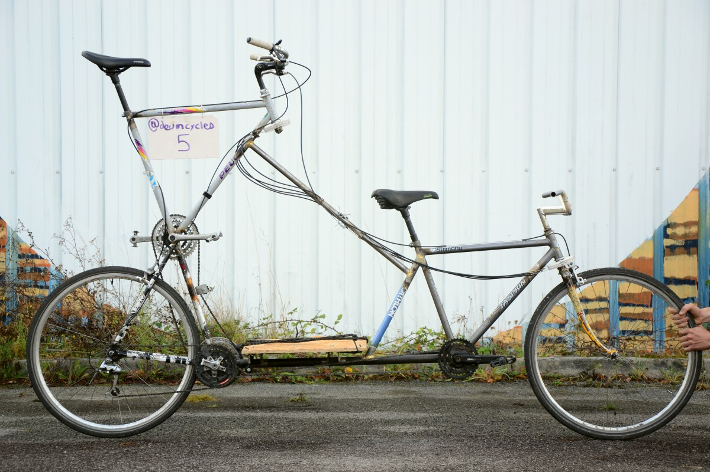
Mathieu fait du vélo depuis gamin, et il bricole lui-même ses vélos. Les composants et les réglages n'ont plus de secrets pour lui mais un déclic se produit lors d'une rencontre... accidentelle avec une voiture. Son cadre est plié et c'est à ce moment qu'il prend justement conscience que ce cadre d'acier est la pièce centrale et le support de tous les autres composants! Il se forme alors au métier de cadreur, quitte son boulot et commence à fabriquer quelques cadres pour les copains, pour se faire la main.
Le Concours de Machins lui permet de mettre à exécution un plan qui trottait dans sa tête depuis quelques temps. Un mélange de différentes inspirations avec le Tall bike, le tandem pour les voyages à 2, le côté utilitaire avec la possibilité de transporter du matériel et la nécessité de tracter une remorque pour transporter son enfant arrivé récemment, sans oublier son chien. Voilà les nombreuses contraintes de départ et en secouant tout ça (sans percuter de voiture cette fois), il nous a pondu son tall tandem de voyage, avec une chouette direction à câble dont il n'est pas peu fier.
Après les premiers tests pendant le concours et quelques petites améliorations, le vélo et son grand équipage devraient partir pour son voyage initiatique l'été prochain : Nantes - Amsterdam pour aller visiter sa soeur!
Fort de ses différentes expériences, Mathieu s'est pleinement lancé dans l'aventure de la fabrications de vélos et vous pouvez suivre sont travail sur Deum Cycles et sur son Insta.
Pascalin
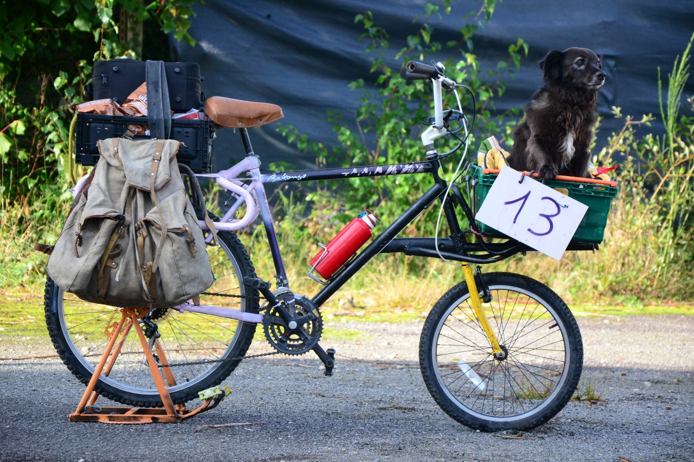
Pascalin est actif à Plan B, un atelier associatif de vélo et de construction. Mais il est probable que vous l’ayez déjà croisé à la Vélorution Universelle, à la Bike War, à la Ciemmona, au Cyclocamp ou dans d’autres réseaux et assos — vélo mais pas seulement.
Depuis l’adolescence, il bricole dans les ateliers associatifs et a découvert la soudure avec un copain.
Depuis il fabrique, construit, fait rouler, …en gardant une question en tête : « Comment faire avec ce que tu as pour en faire le moins possible ? Utiliser les éléments à disposition sans trop les travailler ni les modifier. »
Pour cela il faut beaucoup de récup', pour avoir une multitude de matériaux à utiliser tels quels ou presque. Il faut aussi prendre le temps de les regarder pour voir où ils pourraient prendre leur place.
C’est aussi une façon de concevoir : ne pas partir de ce qu’on veut construire, mais plutôt de ce qu’on peut construire à partir de ce que l’on a.
Et pour découvrir l'histoire de la naissance de son vélo –on cite– "schlag mais fonctionnel", c'est là : https://assoplanb.fr/2023/09/velo-ti-cargo-bakongo-en-bretagne/.
Pierre
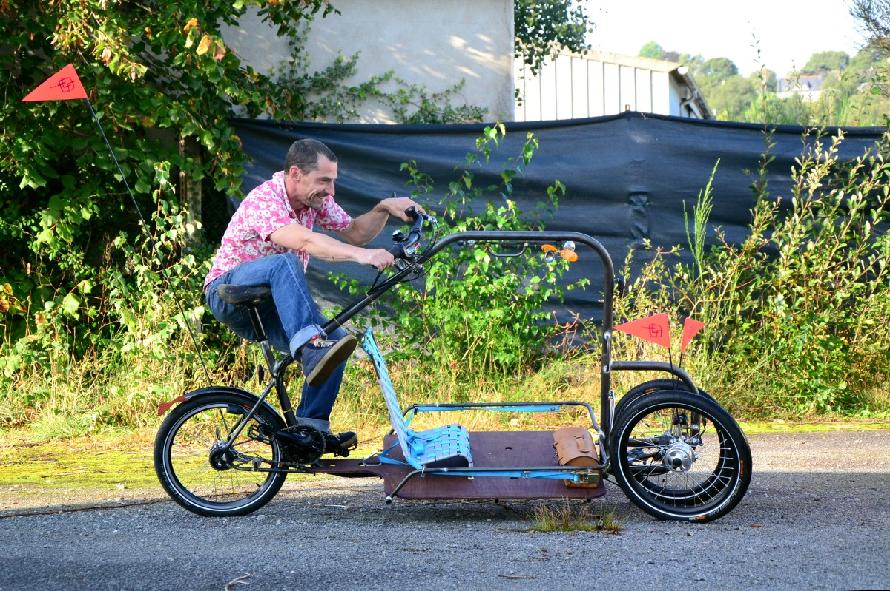
Après des années de cirque, Pierre a installé son atelier à Mondoubleau dans le Loir et Cher. Il a participé au Concours de Machines en 2018 (où il gagné le prix du rookie), puis effectué un "compagnonnage" auprès d'artisans cadreurs. Depuis il conçoit et réalise des vélos sur mesure dans son atelier de Mondoubleau. Il a coeur de fabriquer des vélos utiles au quotidien ou pour des voyages au long court. Si vous allez le voir avec un projet de vélo pour rouler le dimanche, il se peut qu'il refuse le projet. Par contre fabriquer des "side bike" pour les anciens de l'Ephad du quartier, ça le botte !
Il fallait bien un ancien pro de vélo acrobatique pour concevoir et surtout rouler ce "baleineau" qui demande à se laisser apprivoiser avant de se laisser rouler !
https://cyclestaillefer.fr/
Et pour découvrir son travail, vous pouvez aussi écouter l'épisode du podcast Dans la roue.
Ronan
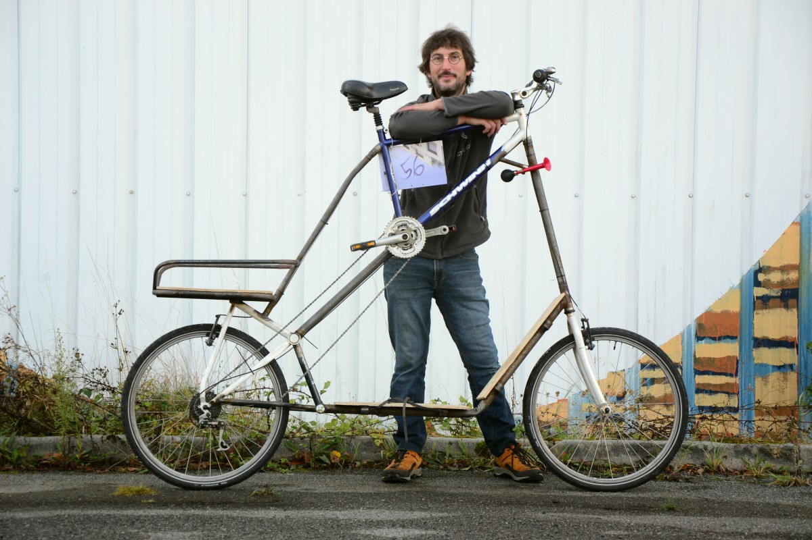
Entre autre architecte naval, ce métier lui amène à toucher la 3D, mais aussi la matière (composite, métal) dans des entreprises où le travail n’est pas seulement au bureau mais aussi en atelier. Souder et concevoir sont dans ses cordes ! Mais ce GRAND-cargo est son premier vélo. Il l’a construit après avoir lu l’annonce du concours de machins. L’idée d’être lowtech pour cette première construction a "enlevé la pression de fabriquer un vélo".
Son principal problème pour la construction ? Faire un GRAND vélo dans un espace de 4m² !
Pour la partie « utilitaire » du vélo, il peut s’appuyer sur son expérience ("jamais sportive"!) de cycliste de toujours, qui remplace l’automobile le plus possible.
Sur les photos, vous ne le verrez pas : en béquille, il a confié la conduite de son bolide à un autre constructeur et au public. Belle démonstration que son vélo répond à la ligne du cahier des charges : « le vélo est facilement utilisable par plusieurs personnes » !
@ronan.patrix
Sacha
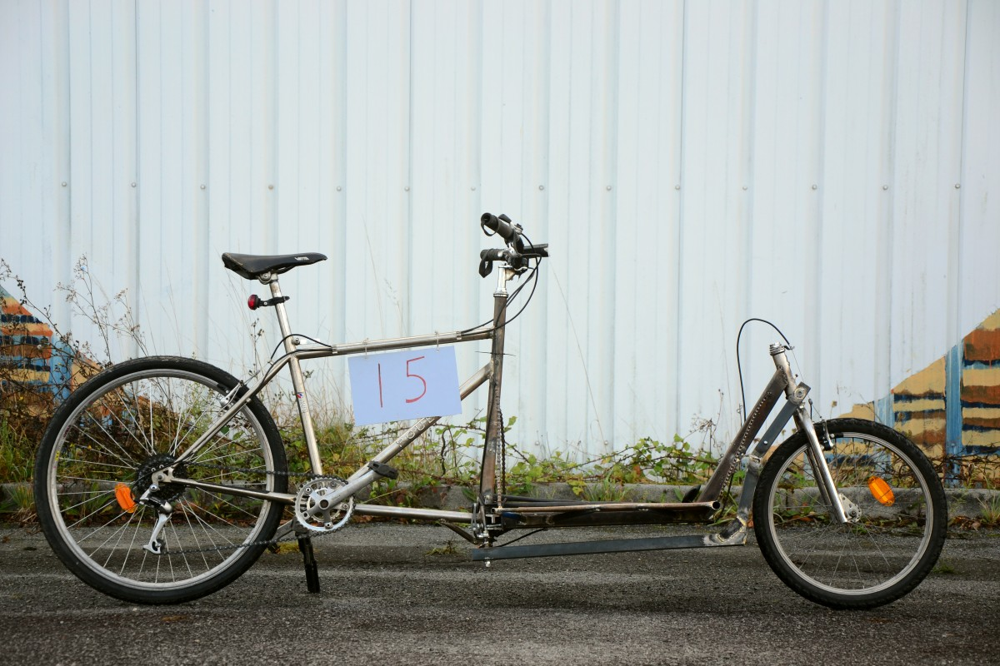
Sacha s’est inscrit au concours. Et puis deux semaines avant le jour J, il a été cherché (en cargo non motorisé bien sur, car le Cantal est un pays plat ...) un poste à l’électrode à 30 km de chez lui, et a tiré 50 m de câble pour amener l’électricité jusqu'au local de l'atelier vélo du quartier.
Utilisateur du vélo au quotidien il a découvert les ateliers d’autoréparation (Marseille et ailleurs). La mécanique n’a rien à voir avec ses études. La soudure non plus. Il s’est formé « au fil de l’eau ». Avoir construit des cabanes, fait différents travaux, récupéré une forge et essayé, … permet de faire des parallèles avec d’autres logiques de bricolage et de connaitre déjà certains outils.
Il commence à braser pour fabriquer les remorques et vélo cargo du festival À la Dérive, un festival cyclo tracté et pédalo généré.
Le vélo cargo pliant qu’il propose a subi une avarie le premier jour, mais il a été rapidement réparé. Belle performance pour un cargo soudé à l’électrode en quelques jours et surtout chapeau à son constructeur qui face à chaque casse surprises de sa machine a su trouver rapidement un solution.
Thomas
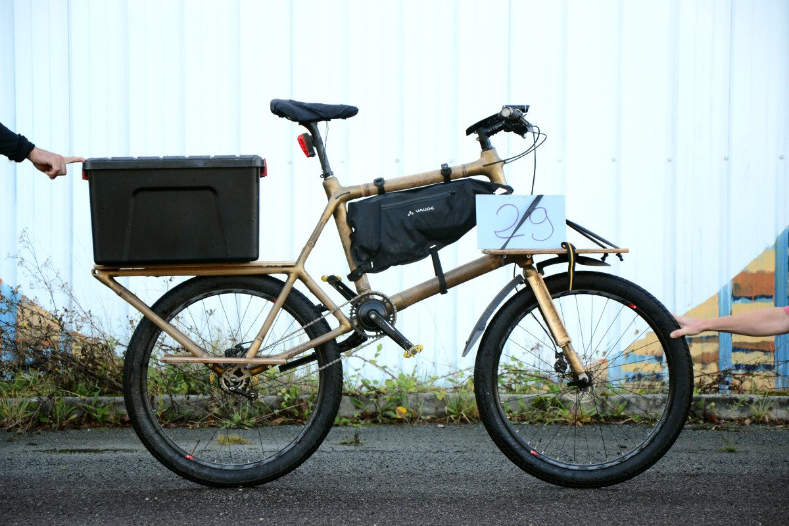
De retours de voyage en 2013, Thomas, découvre les ateliers vélo associatifs et s’investit à BAPAV (Brest à pied et à vélo). Une chute l’amène au vélo couché. Il passe le CQP cycle et travaille comme mécanicien cycle.
Pendant le CQP, il a l’envie de construire un vélo en bois. Il s’avère que cela demande trop de compétences nouvelles en ébénisterie. Il a déjà une expérience de fabrication de bateaux en bois et en résine : il s’oriente donc vers le bambou pour la fabrication d’un première cadre.
Depuis, il a avancé par étapes en tâchant de maîtriser chaque fois une étape de plus dans la fabrication : premiers vélos réalisés avec un kit. Puis amélioration du gabarit et des techniques de résine. Ensuite il s’est intéressé à la matière première : choisir son approvisionnement en bambou, maitriser le séchage. A la troisième génération de vélo, il a travaillé sur la géométrie. Et maintenant il améliore son procédé d’usinage.
Il ne se considère pas comme autodidacte car il ne se sent pas tout seul : il y a beaucoup d’échanges entre pairs, de l’entraide, des commande communes, ...
Ce qu’il aime dans le bambou, c’est qu’il faut peu d’outils spécifiques, le savoir faire est plus facilement transmissible, et l’approvisionnement en matière première peu cher.
Il commercialise ses vélos sous la marque Breizh Bamboo Bike et tient le magasin Les vélos brestois. (Son conseil : « Il faut oser avoir un nom aussi stupide, par contre c’est hyper bien référencé !! ») Parce que fabriquer des cadres à plein temps est difficile économiquement, y accoler une activité de réparation lui permet d’exercer le métier de cadreur au moins une partie du temps et de mutualiser les stocks de pièces nécessaires aux deux activités.
Tifen


Il commence la discussion en rigolant qu’il a un « parcours classique » : une découverte du vélo à l’adolescence, des bricolages dans le garage, (pour construire remorques et vélo couché), un voyage à vélo, un passage par les ateliers vélos associatifs, l’obtention du CQP de mécanicien cycle, beaucoup d’apprentissage en audodidacte (internet et expérimentation) et des formations (soudure TIG) dans le cadre de son travail.
Il a pris confiance et s’est équipé au fur et à mesure : « c’est bien de passer de 3 ferrailles et une serre joint à l’achat de quelques profilés ! ». D’ailleurs il recommande la conception d’outillage comme une super école de la fabrication : car l’outil peut être moche, un peu bancal mais le faire permet de toucher la matière, d’essayer.
C’est en devenant parents qu’il a fallu trouver une solution pour transporter le nouvel arrivé et ainsi est aussi né "le primitif", qui roule ce concours de machins.
Depuis l’enfant a grandi et Tifen a fait évoluer son travail. Miel d’Ours, lancé en 2019, est désormais son activité principale. Dans ces autres constructions, on retrouve son attachement à l’ergonomie et au pratique du quotidien. (d’où le travail sur une béquille solide et pratique).
Dans son atelier de Montauban, il n’y a pas que de la fabrication. Tifen propose aussi des initiations et formation à la soudure et des formations de mécanique vélo.
https://mieldours.fr/
HISTOIRE DE LA PREMIÈRE ÉDITION
Le Concours de Machins est né d'un clin d’œil. C'est lors de l'édition 2021, à Arbent, de son grand cousin, le Concours de Machines, qu'une idée a germé dans quelques têtes un peu plus punks que la moyenne. Une idée qui avait déjà fait son chemin dans le milieu des ateliers participatifs mais sans jamais vraiment aboutir : est-ce qu'on pourrait pas faire des rencontres de fabricant·es de vélos plus orientées vers les pratiques collectives des ateliers vélos, qui portent des valeurs de récupération, de partage, d'entraide, d'auto-gestion, de rencontres et d'échanges ?

Les esprits blagueurs réunis autour d'un bol de cacahuètes ont eu vite fait de trouver un jeu de mot bien senti. L'idée du Concours de Machins était née et allait flotter dans l'air quelques temps. Au fur et à mesure de différentes rencontres formelles ou fortuites, l'idée s'est mise à frémir et un beau jour de l'automne 2022, les premiers bouillons apparurent sous la forme d'une invitation : une liste de sept personnes qui avaient manifestées un certain intérêt pour la démarche était rassemblée autour d'une question : "Alors, on le fait ce Concours de Machins ? Qui veut participer ?"
Et c'est comme ça que le club des sept s'est "réuni" pour la première fois. Sept personnes venant des quatre coins de la France, qui ne se connaissaient pas vraiment et qui pour la plupart ne s'étaient jamais vues, se connectent tant bien que mal à une "conf call", sans caméra, avec certain·es sur des téléphones qui ne pouvaient rien voir ni écrire, d'autres sans micros qui ne pouvaient pas parler. Un joyeux bordel pas très confortable mais auquel nous nous sommes habitué·es. Au rythme d'une "réunion" mensuelle, le projet prend doucement forme et une question cruciale arrive rapidement : où organiser ce Concours de Machins ?
C'est là que la connexion avec Pauline et Franck des Circaciers intervient et lance vraiment le projet dans du concret : ils gèrent un lieu à Redon qui prépare son premier événement public autour du métal, avec accueil du public, animations, soirée concerts, etc., et pourraient accueillir le concours, qui colle bien avec le thème.
Cette fois c'est sérieux, le concours de Machins va vraiment avoir lieu ! Dès le début, on s'est dit qu'on l'organisait comme un évènement unique, sans penser à des potentielles futures éditions. Si ça marche, peut-être que des gens auront envie de prendre le relais pour organiser une deuxième édition. Ce serait chouette, mais arriver à en faire une était déjà un challenge bien suffisant pour nous !
Dans une collaboration auto-gérée étonnamment fluide et spontanée, le projet se construit peu à peu. L'idée de base restant de proposer un "faux concours" où on reprend tous les codes mais où on défend en fait un évènement sans aucune compétition, où la rencontre et l'échange priment, où la confrontation est remplacée par une coopération inclusive. Pas de classement, pas de prix (hormis le "prix du public") mais de la place pour chacune et chacun pour présenter ses idées et son travail en essayant de valoriser les points forts de chaque machin.
Un cahier des charges et une belle affiche voient le jour, mettant l'accent sur les besoins du quotidien pour utiliser le vélo comme un vrai engin de déplacement et de transport d'objets et de personnes. Le machin devra permettre de transporter deux cabas pleins et/ou une personne. L'accent est mis sur la réutilisation de matériel déjà existant et la possibilité de reproduire la méthode à l'aide d'un outillage accessible au plus grand nombre.
Tout ça prend vraiment forme quelques jours avant le concours, quand les premiers membres de l'organisation arrivent sur place et découvrent pour la première fois le lieu avec tout à construire et installer pour la réalisation de la manifestation. Le reste des organisateurices, participant·es et bénévoles arrivent petit à petit dans les jours suivants dans un grand crescendo où chacun·e participe à la matérialisation du Concours de Machins, dans un superbe moment de création collective auto-gérée.
On se demande encore comment on a réussi à faire tout ça en se rencontrant physiquement pour la première fois quelques jours ou heures avant le concours. (Ce qui a donné quelques scènes ubuesques, comme croiser un autre membre de l'équipe d'orga plusieurs fois dans la journée sans se douter qu'on fait partie de la même équipe et qu'on échange depuis plusieurs mois, puisqu'on ne s'est jamais vus !)
Mais la magie a fonctionné, l'addition de toutes ces personnes avec leurs envies, leurs compétences et leurs énergies folles se transforme vite en multiplication des possibilités et des émotions. Toujours sur le fil, toujours pleins de surprises et de petits miracles, tout se construit et se vit en flux tendu !
Il ne fait pas de doutes que l'objectif d'échanges et de rencontres est accompli ! La preuve en est tous les liens qui se sont créés, les amitiés naissantes, les vacances partagées, les projets communs... et la constitution d'une nouvelle équipe pour une 2ème édition, parce que c'était tellement bon qu'il est impensable d'en rester là !
CONSTATS, PISTES
On ne savait pas trop à quoi s'attendre pour cette première édition. Quelques constats.
Initiatives individuelles & héritage des ateliers
On s'attendait à ce que ce soit plutôt des œuvres collectives, fabriqués dans des ateliers vélos.
Au final, ce sont plutôt des individus seuls qui ont participé, sûrement pour tout un tas de raisons pratiques et humaines (pouvoir se retrouver à plusieurs dans un même local, dans des temps communs, n'est pas toujours simple). Il apparaît cependant, en discutant avec les constructeurs présents, que presque tous sont passés par les ateliers d’autoréparation vélo, où on peut : apprendre la mécanique, se perfectionner, travailler à partir de récup', accéder à des outils, découvrir la soudure, etc., mais aussi : rencontrer, échanger avec d’autres, transmettre, réfléchir à l’impact des déplacements, etc., toutes ces choses infiniment précieuses qu’on trouve en franchissant le seuil d’un atelier vélo et qui restent invisibles quand on passe de loin et qu’on ne voit « que des gens qui bricolent des vélos ». Mais tout ça est, entre autres, très bien décrit dans l’atelier des miracles.
Où sont les constructrices ?!
Une chose que l'on déplore est que seuls des hommes se soient inscrits pour présenter un machin. Ce n’est pas faute d’avoir fait passer l’info à d’autres, mais ce sont eux qui ont construit des choses.
Pleins d’explications à ça.
Nombreux sont ceux qui ont bricolé dans leur coin, appris sur le tas, passé des heures sur le net, etc., bref se sont formés « seuls », « se sont lancés ». On nous dit : "oui mais s’ils l’ont fait pourquoi les femmes ne le font pas ? »
En lisant les portraits et en écoutant des constructeurs, nous avons eu cette impression qu’il y a un impensé (ou bien juste un non dit ?) de ce qui leur permet de monter ainsi en compétence, seul, et de se lancer. Une non prise en compte de l’éducation et des sociabilisations genrées dont nous héritons, dont nous sommes imprégné.es.
Ce n’est pas pareil de débarquer dans un atelier d’autoréparation vélo quand on a déjà bricolé dans le garage paternel ou quand on ne sait même pas « à quoi ressemble une clef à laine ?! » et qu’on se sent cruche, pas à sa place. Et en fonction des personnes sur qui on tombe on y revient ou non.
Se sentir légitime, avoir confiance en soi, sont des acquis très facilitant pour « se lancer », et force est de constater que les hommes en sont plus souvent mieux dotés.
(Il y a déjà moult textes, podcast, documentaire, littérature sur le sujet, d'où ce paragraphe un peu court. Si ça ne te cause pas, tu devrais trouver quelqu'un pour te renseigner/ t'orienter vers des lectures.)
On a beau se déclarer allié.es, parfois il faut devenir complice. C’est plus engageant, certes.
Ci-après en vrac des propositions concrètes pour encourager des participations autres que masculines pour la prochaine édition :
- ne pas se contenter de transférer l’info mais l’assortir auprès de connaissances d’un mot pour encourager la participation (et être disponible pour en discuter), sinon c’est juste un mail de plus dont on se dit qu’il ne nous concerne pas ;
- mettre à dispo son atelier, des outils, des compétences ;
- prendre le temps de transmettre du savoir faire, de « se mettre à la place de » , d’adapter le niveau ;
- écouter, faire parler les personnes autour de soi qui ont d’autres expériences d’apprentissage, comprendre pour essayer de lever les freins ;
- ne pas prendre les outils des mains, ni faire à la place ;
- refléchir à comment on dit « il ne faut pas faire comme-ci", "ça tiendra pas comme ça », pour que ça soit constructif et pas incapabilisant.
Moment d'auto-satisfaction
Nous somme fiers de déclarer que cette première édition à Redon a été élue a l'unanimité "Meilleur concours de Machins depuis sa création" par une assemblée heureuse, exténuée et un peu incrédule face à l'intensité des rencontres.
GOODIES
Quelques T-shirts officielsTM de l'événement sont encore disponibles : 20 € seulement !

Contactez Aulne pour, vous aussi, « devenir Vélutile ».
REMERCIEMENTS
Un grand merci à toute celles et ceux, constructeur·ices professionnel·les, amateur·ices de vélos, voyageur.euse qui ont détourné leur route, curieu.ses qui ont fait le déplacement pour venir voir les machins et rencontrer les constructeurs.
C’est aussi grâce à vous que ce moment était riche.
Un grand merci à Pauline et Franck des Circaciers pour l'accueil de l'évènement sur leur lieu, le Terrain Vague, lors de leur premier évènement ouvert au public. Nous avons partagés de grands moments d'excitation et d'incertitudes propres aux premières éditions !
On vous souhaite pleins de beaux évènements sur votre Terrain Vague et merci encore pour l'accueil du Concours de Machins et de sa préparation, ainsi que pour votre grande aide dans l'organisation par les contacts et les bons tuyaux avec les différentes associations et structures locales.
On glisse ici un merci à François (de Cycles Itinérances) et Trudie : c’est très réjouissant et touchant de sentir la présence de cyclo-randonneurs de toujours et d’un cadreur de la génération précédente dont le savoir-faire et l’envie de le transmettre nous inspirent.
Merci à Camille pour les magnifiques visuels, et à Souen pour le bidouillage internet.
Et enfin, merci à vous qui lisez ces lignes et qui allez, peut-être, promouvoir cette initiative autour de vous.
L'équipe Vélutile
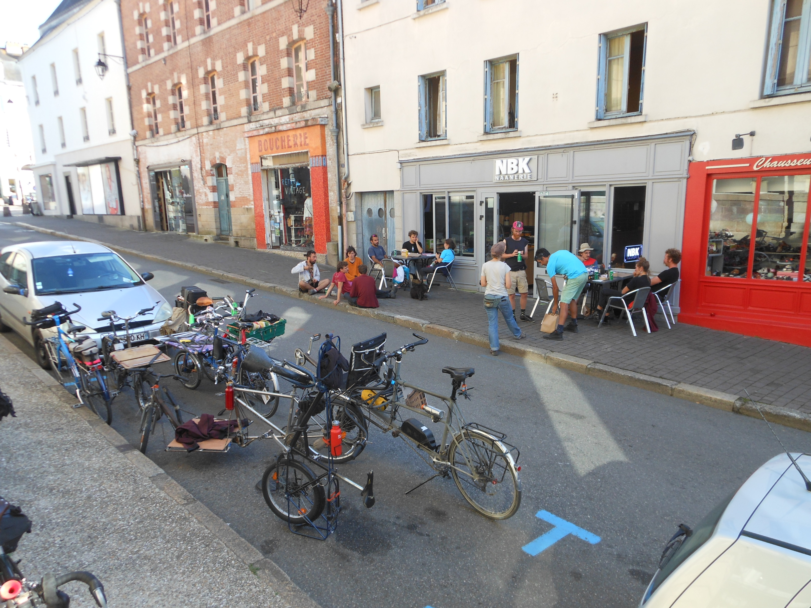
À l'année prochaine !


{kind=link}